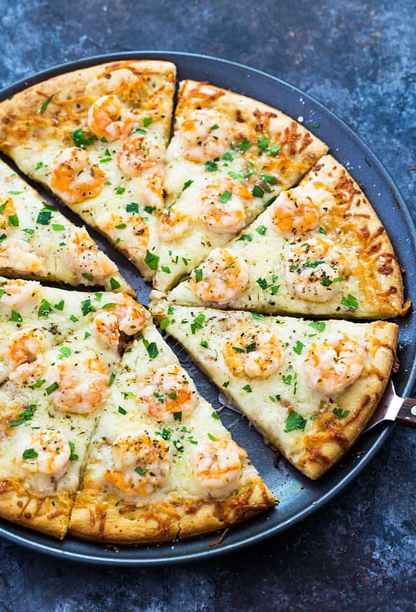

Shrimp Pizza
Home

This is a great summertime pizza, because it is light and it can be served hot or cold.
Here is a good recipe for Pizza with shrimps and other vegetables.
Ingredients
- 1 (8 ounce) package cream cheese, softened
- 1 cup grated Parmesan cheese
- ½ cup mayonnaise
- 2 cloves garlic, minced
- 1 (10 ounce) package frozen chopped spinach, thawed and drained
- 1 (10 ounce) container refrigerated pizza dough
- 2 tablespoons olive oil
- 1 teaspoon Italian seasoning
- 2 tablespoons olive oil
- 1 small red bell pepper, sliced
- ½ small red onion, sliced
- 2 teaspoons Italian seasoning
- 2 (6.5 ounce) cans small shrimp, drained
Steps
- Preheat an oven to 400 degrees F (200 degrees C). Stir together the cream cheese,
Parmesan cheese, mayonnaise, garlic, and spinach until evenly mixed; set aside.
- Press the pizza dough onto a baking sheet, and brush with 2 tablespoons of olive oil. Sprinkle with 1 teaspoon Italian seasoning.
Bake in the preheated oven until golden brown, 10 to 12 minutes.
- Meanwhile, heat 2 tablespoons of olive oil in a skillet over medium heat, and cook the bell pepper and onion until tender, about 5 minutes.
Season with 2 teaspoons of Italian seasoning, and stir in the canned shrimp; cook until the shrimp are heated through.
- When the crust has baked, remove from the oven, and spread evenly with the spinach mixture.
Spread the shrimp and vegetable mixture onto the pizza, and cut into pieces to serve.